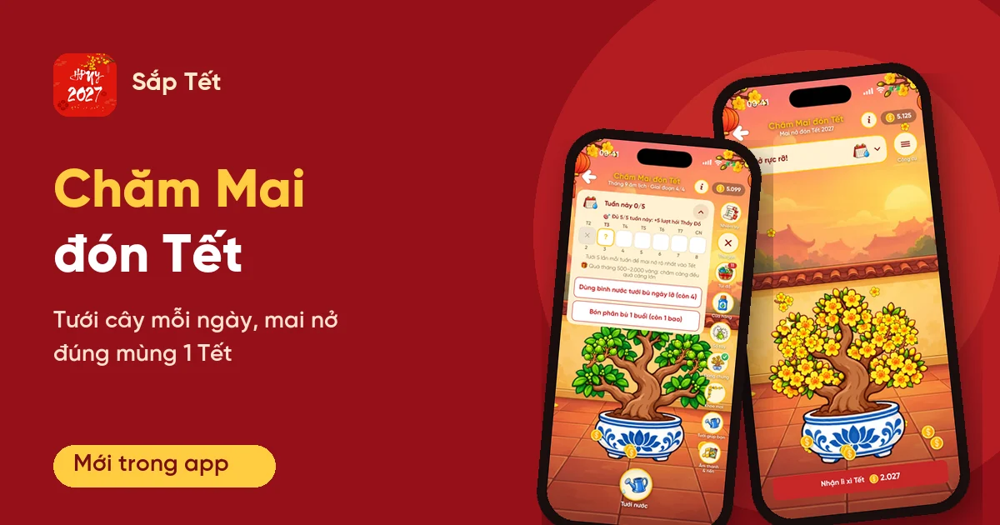
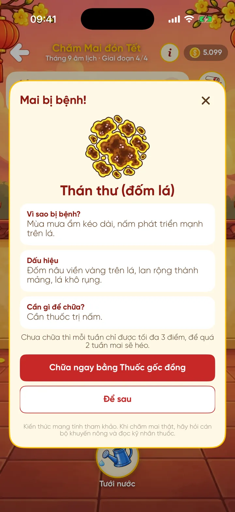
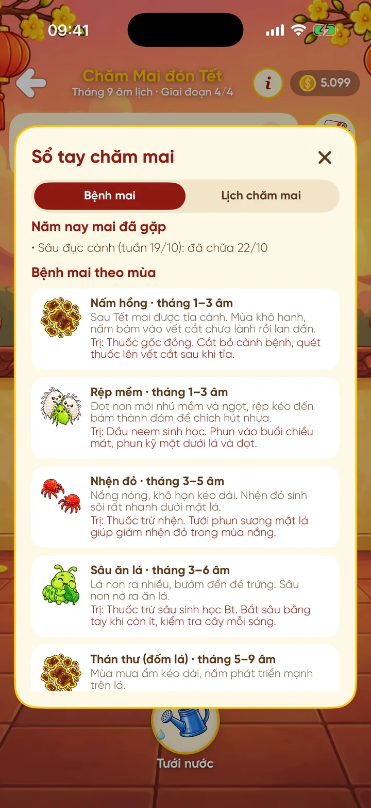
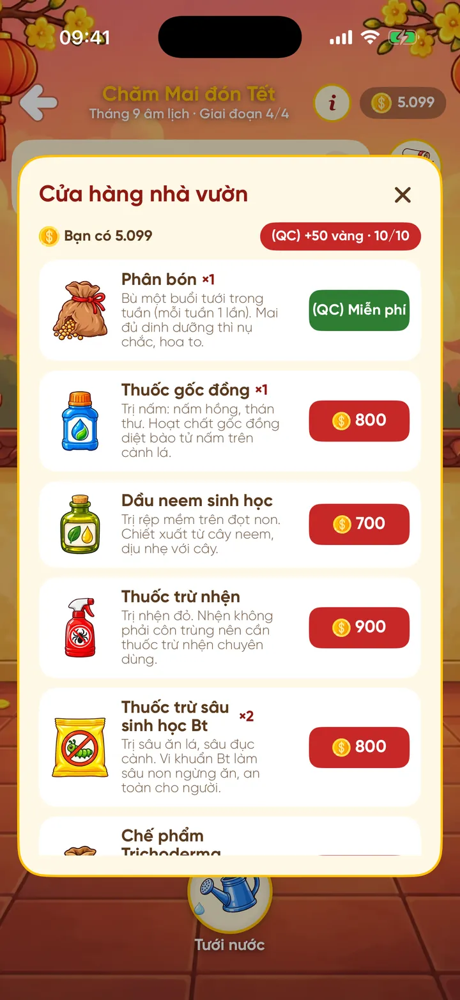

Chăm Mai đón Tết trong app Sắp Tết: tưới cây mỗi ngày, mai nở đúng mùng 1

Nhà nào miền Nam cũng quen cảnh cả năm chăm chậu mai, chỉ mong sáng mùng 1 hoa nở vàng cả hiên. Chăm Mai đón Tết mang đúng cảm giác đó lên điện thoại: bạn nhận một chậu mai trong app Sắp Tết, tưới mỗi ngày, bón phân, trị bệnh theo mùa, và mai nở vào mùng 1 Tết với độ rực rỡ tuỳ vào công chăm của bạn.
Chăm Mai đón Tết là gì?
Chăm Mai đón Tết là trò chơi nuôi cây nằm trong app Sắp Tết. Một vụ mai đi đúng theo lịch âm: từ 11 tháng Giêng đến giao thừa là mùa chăm, bạn được tưới cây mỗi ngày. Từ mùng 1 đến mùng 10 Tết mai nở và không cần tưới nữa. Sang mùng 11, hoa tàn và một vụ mai mới bắt đầu lại từ đầu.
Cây lớn theo tháng âm lịch. Mỗi tháng là một giai đoạn lớn, chia thành 4 giai đoạn nhỏ, nên mỗi lần mở app bạn thấy cây đúng với thời điểm trong năm, như tháng 9 âm là mai đầy lá và đã nhú nụ xanh. Vụ mai hiện tại nở vào mùng 1 Tết Đinh Mùi, tức thứ Bảy 06/02/2027.
Bắt đầu giữa năm vẫn không bị thiệt: lần đầu chơi, những ngày đã qua của vụ được tính như đã tưới, nên ai mới cài app hôm nay vẫn có thể nhắm tới mức nở đẹp nhất.
Mỗi ngày chơi thế nào?
Tưới nước là việc chính, miễn phí, mỗi ngày một lần. Lần tưới đầu tiên trong ngày còn rơi ra "Lộc tưới cây" từ 1 đến 50 vàng. Chạm vào cây thì mai rung lá, thỉnh thoảng rơi một đồng vàng xuống đất để bạn nhặt.
Điểm được tính theo tuần, từ thứ Hai đến Chủ nhật, tối đa 5 điểm mỗi tuần: mỗi ngày có tưới là 1 điểm, tưới nhiều lần trong ngày vẫn chỉ tính một. Cộng dồn cả vụ, mai nở theo 4 mức:
- Lác đác: dưới 40% số điểm tối đa
- Khá: từ 40%
- Đẹp: từ 70%
- Rực rỡ: từ 90%
Lỡ quên một hôm cũng không sao. Phân bón bù được một ngày lỡ, mỗi tuần một bao. Bình nước bù thêm ngày lỡ, tối đa 2 lần một tuần. Nếu để cả một tuần không tưới, cây héo, nhưng chỉ cần tưới lại là mai tươi lên và không mất tiến độ, vì cây luôn lớn theo lịch.
Trong lúc chăm, cây còn "biết nói": lúc thì nhắc bạn nhớ tưới, lúc thì mơ Tết này nở rực rỡ, và đáp lại mỗi khi bạn tưới, bón phân hay chữa bệnh.
Bệnh mai theo mùa và Sổ tay mai
Giống mai thật, mai trong app cũng có lúc bị bệnh. Có 9 loại bệnh đi theo tháng âm, ví dụ nấm hồng, rệp mềm đầu năm, sâu ăn lá, thán thư mùa mưa, rệp sáp, bọ trĩ hại nụ cuối năm. Khi mai bệnh, mỗi tuần chỉ được tối đa 3 điểm. Để quá 2 tuần không chữa thì cây héo.
Mỗi bệnh có lý do, dấu hiệu và loại thuốc riêng. Bạn mua thuốc ở Cửa hàng nhà vườn và phải chọn đúng thuốc: dùng sai, app không nhận và thuốc vẫn còn trong túi. Sổ tay chăm mai có hai mục: "Bệnh mai" (bệnh năm nay đã gặp và bảng bệnh theo mùa) và "Lịch chăm mai" theo từng tháng âm.


Nội dung bệnh mai trong app chỉ để tham khảo cho vui. Khi chăm mai thật, bạn nên hỏi cán bộ khuyến nông và đọc kỹ nhãn thuốc, đúng như dòng lưu ý cuối mỗi hộp thoại trong app.
Nhiệm vụ, quà tháng và lì xì Tết
Mỗi ngày có 3 nhiệm vụ cố định: Khoe cây mai (thưởng 1 nước), Thăm và tưới giúp mai nhà bạn (thưởng 1 nước) và Chơi 1 ván game bất kỳ trong app (thưởng 1 bao phân bón). Ngoài ra còn mấy phần quà theo mốc:
- Quà tháng: mỗi lần mai lên tháng mới, nhận 500 đến 2.000 vàng, chăm càng đều quà càng lớn.
- Quà tuần: tuần nào đủ 5/5 điểm được thêm 5 lượt hỏi Thầy Đồ.
- Lì xì Tết: lúc mai nở, nhận 200, 500, 1.000 hoặc 2.027 vàng tuỳ mức Lác đác, Khá, Đẹp hay Rực rỡ.

Khoe mai, tưới giúp bạn bè, chưng mai
Khoe mai tạo một tấm thiệp đỏ có cây mai của bạn, giai đoạn, điểm chăm và tên, rồi mở bảng chia sẻ để gửi cho bạn bè. Ở Vườn mai bạn bè, bạn thăm cây của bạn bè và tưới giúp: mỗi lần tốn 1 nước, nhận lại 1 đến 10 vàng, mỗi cây một lần mỗi ngày. Ngày được bạn tưới giúp cũng tính là ngày đã tưới của chủ cây.
Bật Chưng mai thì chậu mai của bạn hiện ngay trên màn hình chính của app, chạm vào là mở vườn. Màn hình chăm mai có nhạc nền riêng, tắt được, và 5 hình nền: Hiên nhà, Vườn xuân, Chợ hoa, Đêm giao thừa, Sân chùa.
Miễn phí và VIP
Toàn bộ phần chăm cây chơi được miễn phí: tưới hằng ngày, nhiệm vụ, quà tháng, lì xì Tết, khoe mai và tưới giúp bạn. Vàng trong app dùng để mua phân bón, thuốc. Mỗi ngày bạn còn nhận được một bao phân bón miễn phí và tối đa 10 lần +50 vàng bằng cách xem quảng cáo (các nút ghi "(QC)").
Hình nền Hiên nhà là miễn phí. Bốn nền còn lại mở vĩnh viễn bằng một lần xem quảng cáo, hoặc mở hết khi dùng gói VIP. Người dùng VIP cũng không thấy banner quảng cáo dưới màn hình chăm mai.
Mở Chăm Mai ở đâu?
Trong app Sắp Tết, mở mục Khám phá → Chăm Mai, hoặc chạm biểu tượng chậu mai nhỏ trên màn hình chính. Chấm đỏ trên biểu tượng báo cho bạn biết hôm nay chưa tưới, mai đang bệnh hoặc có quà chờ nhận. Chăm Mai có trên cả Android và iOS:
- Trang ứng dụng Sắp Tết, có nút tải đúng cho điện thoại của bạn
- Google Play (Android)
- App Store (iOS)
Tóm lại
Chăm Mai đón Tết là một thói quen nhỏ mỗi ngày: mở app, tưới cây, xem mai lớn dần theo lịch âm. Mức nở ngày mùng 1 phản ánh công chăm của cả năm, còn tưới giúp và khoe mai giúp bạn bè cùng chơi. Vụ mai này nở vào mùng 1 Tết Đinh Mùi 2027, nên ai bắt đầu từ bây giờ vẫn còn đủ thời gian.